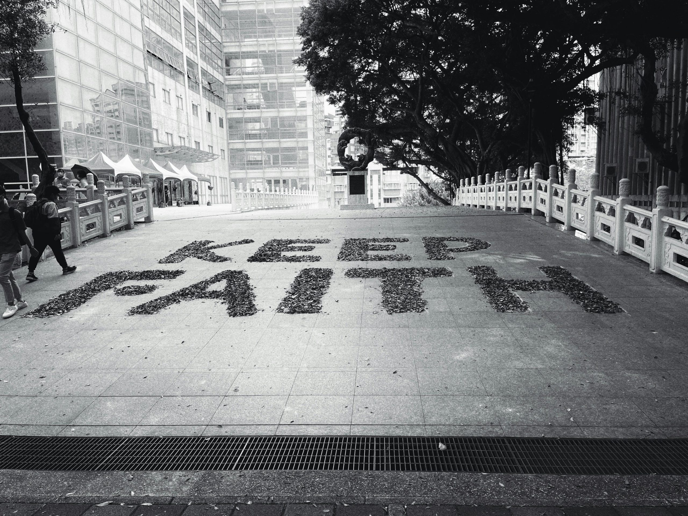

有時候和朋友聊天，大家難免會聊到包養和包養網這類熱門話題。以前，大多數人聽到「包養」總是帶點神秘，甚至有點避談的感覺，但現在似乎越來越多人能自然接受，還開始討論甜心經驗和感情新選擇。
包養文化在台灣正慢慢變成一種社交現象，也讓不少人重新思考愛情與關係的定義。這篇文章想輕鬆談談包養網怎麼改變我們看待愛情的方式，也邀請你一同來了解，這背後的故事和心情變化。
包養文化怎麼進入台灣日常生活
包養文化在台灣這幾年發展得非常快, 其實你我身邊都有朋友偷偷聊過包養、包養網, 甚至有些人還會直接分享「甜心」經驗。這一波變化和手機社群、經濟壓力和價值觀變化都有很大關聯。慢慢地, 包養不再只是少數人才懂的秘密話題, 而成為大家茶餘飯後的討論主題。讓我來分兩個小面向聊聊, 為什麼包養和包養網會這麼容易滲透進我們日常生活。
包養網與甜心交友方式的出現
包養網近幾年突然間爆紅, 很多人都說這種平台讓認識「甜心」和「乾爹」變得更方便。如果把包養網比喻成手機交友App, 差別就是彼此需求一開始就超直接——金錢和關係劃分都很清楚。以前別人搞包養可能還得偷偷來, 現在只要滑個手機, 馬上可以選擇心儀對象, 雙方談好條件就能配對成功。
出現這些平台背後, 真的和我們生活习惯改變太有關，例如：
- 社群網路讓我們更習慣線上配對，也更容易私下聯絡
- 經濟壓力變大，年輕人找工作難，有人想靠包養補貼生活
- 社會開放，大家談戀愛不再只看感情，有人開始追求實質生活品質
身邊就有朋友，大學還沒畢業，從IG就會收到包養邀請。剛開始她說很排斥，但真的遇到經濟壓力時，加上看身邊同學的經驗分享，她也開始動心。現實生活困難，有時候真的只差一個連結，就走進「甜心」世界。
台灣社會對包養的看法與改變: 舉例說明社會大眾從避談到漸漸討論、接受的過程
過去，「包養」這兩個字大家幾乎不敢明講。就連家庭聚餐聽到也會裝作沒聽到。但近幾年，網路上隨便滑一滑，包養經驗文章滿天飛。YouTube、Dcard 都有人公開分享包養故事，甚至有「甜心情侶」直接出面受訪，這在以前根本無法想像。
下面這些現象充分顯示台灣社會態度的變化：
- 網友在社群上討論包養的真心話題，大方分享遇見好或地雷經驗
- 媒體開始邀請「甜心」接受專訪，包養不再是完全負面的標籤
- 大學生、上班族都有人坦白自己有包養經驗，不再躲躲藏藏
- 長輩圈雖然還有質疑，但年輕族群已越來越能接受這種新型關係
以我認識的例子來說，剛出社會的同事以前只敢關掉螢幕私聊包養網，現在天天在公司午休聊甜心新話題。他坦率說：「現代戀愛模式百百種，我只是多一個選項，沒什麼好丟臉的。」
社會價值改變，包養和甜心關係逐漸被輕鬆對待。你很難不發現，這股新興文化已經靜悄悄滲透進我們的日常生活。
Photo by Klub Boks
包養影響台灣年輕世代的愛情觀
這幾年包養和包養網人氣大爆發，讓越來越多年輕人思考「戀愛到底是什麼？」身邊不少朋友認識甜心後，生活和想法都有些不同。年輕世代直接談金錢和感情，甚至可以用很坦然的態度講出自己的價值觀。包養文化像一面鏡子，照出大家面對現實問題時的真心話，也讓戀愛這件小事變得多了幾個現實選項。
戀愛與經濟利益的交集
包養不再像過去那麼神秘，反而多了一些現實味。年輕人正視生活壓力，有人開始將「經濟」放進戀愛方程式。包養網給了選擇，讓雙方能清楚說出自己的需求：
- 「我想找能一起生活、經濟互補的對象。」
- 「只要他能支持我夢想，感情可以慢慢培養。」
包養關係有時很單純，就是交換彼此擁有的條件。朋友常聊，生活中租房、交通、學費這些壓力，很容易讓人思考「如果有甜心或乾爹，自己的選擇會不會多一點？」也因此，談戀愛跟經濟變得沒那麼難啟齒。
在甜心文化盛行的現在，大家越來越能自然討論金錢與感情的界線：
- 有人覺得成熟坦率的財務交流，比「只談純愛」來得實際。
- 有人則勇於爭取物質條件，認為這是現實生活的一部分。
- 更多人回過頭來檢視：「我要的愛情，是不是也必須顧到生活？」
這些聲音讓戀愛不再只有感性，也多了些務實的層面。
平等與自主的新思考
包養文化的興起，其實也讓大家開始認真思考什麼是平等和自主。以前談到包養，總像在討論誰主導誰，現在年輕世代反而打破了框架。
在包養網上，女生可以主動設定標準；男生也能理性談出自己的底線。這種互利合作，給了雙方平等發聲的空間。不再只是單方面的施與受，而是：
- 自主選擇能改變自己生活的感情模式
- 誠實面對自己的需求與底線
- 尊重彼此的選擇，不把標籤貼在任何一方身上
不少女生和我聊，她們不想被說「愛錢」，但也不會因壓力而委屈自己。她們認為，只要是透明坦率的條件協議，就是平等的開始。男生也有壓力，有人分享「我喜歡被需要，但不想成為提款機」，所以甜心文化教會大家：自主和尊重才是感情長遠的基礎。
包養網和甜心經驗強調每個人都有追求幸福的權利，也讓我們思考：感情不是只有一種格式，而是可以自己定義的選擇。
Photo by Charles Chen
包養關係裡的現實與誤區
當包養和包養網越來越多人討論、參與時，很多人開始對「甜心」關係有了想像，但現實和期待之間常常有大落差。走進包養這條路，像是一場真實測驗，讓人不得不重新審視感情、物質、人性之間的糾結。不管你只是好奇，還是真正參與過，都難免會遇上各種誤會和真實挑戰。我整理了最常被忽略的真實面，帶你直接看進這些感情背後的故事。
感情真實性與期望落差: 說明包養與正統戀愛的差異，及雙方常有的錯誤期待
在包養關係裡，最常出現的情況，就是雙方對感情和物質的想像「很不一樣」。有些「甜心」曾經覺得，和乾爹相處多了會生出真愛；有的則想像對方能一路支持下去，像戀人一樣陪伴自己。但實際上，包養和傳統戀愛最大的差別，就在於「條件先說好，關係定位很明確」。
包養關係常見誤區有：
- 情感投入和物質交換混在一起
很多人走進包養，起初只想獲得經濟支持，但日子久了，會不自覺產生依賴或期待對方更多關心。反過來，有些乾爹其實只想保持距離，單純當個金主，沒有多餘的心力投入「談戀愛」。 - 希望對方改變定位
有人投入了心思就會希望關係升級，從乾爹甜心變成情侶。這種動搖，反而容易讓兩人尷尬，甚至結束合作。 - 以為包養一定有愛情
朋友跟我說過：「以為時間久就能變情侶，其實大部分只是利益結合。」包養本來就強調現實交換，如果真的遇到真愛，其實機率很低。
現實案例：
有個女生和乾爹簽約時聊得投緣，三個月後希望轉變成正牌女友，但對方卻直接坦言「我不是談戀愛，是現實合作」，結果她心情大受打擊。這種期待落差超常見，很多甜心經歷過類似心情波動。
包養網常見爭議與安全提醒: 談詐騙、隱私、經濟風險等真實問題，提醒讀者注意
 Photo by 玥緣
包養網看似方便也很透明，但背後的爭議和風險，絕對不能小看。參加包養不只是「談條件」這麼單純，還要懂得避開陷阱。
最常出現的爭議有：
- 詐騙與假帳號
包養網常會有冒充乾爹或甜心的假帳號，先談條件後就消失，甚至直接騙取個資和錢財。有些詐騙集團利用大家的急切心理設局，一不小心就可能損失慘重。 - 隱私泄漏
部分網友因為怕被發現參與包養，結果被人偷拍、威脅曝光，產生壓力和恐懼。許多受害者一開始沒有設想後果，事發時已難以挽回。 - 經濟風險
包養說白了是金錢交換，雙方如果沒講清楚付款規則，很容易產生糾紛。有的乾爹故意拖欠錢款；也有甜心拿了錢隨即消失，雙方互不信任，弄得心力交瘁。
如何做好安全防護？這幾點一定要記住：
- 盡量用匿名和虛擬電話帳號溝通，避免透露本名和真實住址。
- 約見一定選擇公開場合，不要輕易到對方家裡或偏僻地點。
- 清楚協商所有條件，金錢和見面頻率先寫下來，避免糾紛。
- 對方要求先付款或過多個資時要提高警覺，遇到可疑直接離開。
- 找值得信賴的平台或朋友介紹，不要隨意隨機配對。
親身經歷讓我深刻體會，包養關係中的現實問題，不只是約會交流這麼簡單，背後牽涉的是安全、信任和未來的保障。參與前，請一定多瞭解、多詢問，確保自己的權益和安全。
包養文化未來發展與社會討論
隨著包養和甜心平台越來越受注意，台灣社會開始出現各種聲音。包養網從只存在於小圈子變成人人都可加入的平台，社會態度也從避談、批評，到現在有人主張規範化或乾脆討論合法化。討論的範圍更廣，從戀愛行為到法律保障、從道德觀念到財務自主。包養文化不只是感情話題，也牽動到未來社會要怎麼面對和接納新型關係。
包養合法化與規範化討論
最近幾年，台灣出現了「要不要讓包養合法化」的網路討論。有些人認為，既然包養和甜心經濟存在已久，不如正面看待並訂定清楚規則。尤其包養網越來越多，雙方的權益、詐騙、糾紛也隨之增加。
很多參與包養的人提出：
- 如果有法律保障，雙方協議會更明確。
- 規範資金流動、隱私保護，可以減少詐騙和暴力風險。
- 法律透明，有糾紛時才能公正處理。
不過，也有不少人擔心，一旦走向合法化或過度規範，會不會讓包養變得像公然買賣關係？社會價值觀會不會因此再次分裂？這是台灣社會還在思考的現實問題。有些立場認為，只要雙方自願且成年，包養就是私人選擇；但也有反對聲音，認為包養會傷害愛情本質甚至影響婚姻家庭。
無論站在哪一邊，討論至少開始變得公開、平和，不再只有「躲著討論」的氛圍。政府、法律圈、學者甚至媒體，都開始對包養產生研究或建議。也許未來真的會看到更多明確的規定或保障出現。
愛情關係的新常態
包養和甜心經濟，讓不少人重新認識「愛情關係」。以前談戀愛、結婚才是正路，現在多了包養這一條，大家的想法也越來越多元。
我觀察到，年輕族群尤其能接受不同形式的結合：
- 感情不一定只為了浪漫，也可以有務實的合作。
- 公開談論財務或生活條件，不再覺得羞恥。
- 部分人認為，能找到彼此理解、互利又坦率的伴侶就是一種幸福。
社群媒體也帶動這股新型態：許多甜心透過IG、推特分享經驗，讓包養文化越來越透明。這種模式形成一種「新常態」，大家在公開場合討論「理想關係是什麼」「什麼樣的甜心和乾爹才合得來」。
愛情不再只有「戀愛」或「婚姻」這兩種參考答案。有人選擇長期分手不分家，有人主張一段時間只談錢不談心。這些新觀念慢慢滲透進日常，讓我們的選擇更多，也讓愛情能有不同的樣子。
我相信，未來包養網的角色，會逐漸趨向公開和透明。社會包容力變強，規範逐步建立，這種跨越經濟、情感的模式，有可能真成為愛情新常態。只要雙方願意，就能有屬於自己的幸福定義。
結論
包養、包養網與甜心文化已經讓台灣的愛情樣貌有了新變化。身處這個多元的時代，大家都開始用更坦然的心情去面對自己與他人的感情選擇。我一直認為，每段關係不管形式，都值得被尊重，只要彼此真心認同、懂得保護自己就好。
其實，愛情沒有標準答案。重點是我們能誠實面對自己的想法和需求，不需要照著舊有模式生存。未來，包養文化怎麼發展還有很多變數，討論一定會持續下去。我也鼓勵每個人勇於表達自己的感情觀，不用害怕和質疑聲共存。
謝謝你讀到這裡，願你們都能找到讓自己安心和自在的理想關係。包養、甜心或任何愛情選擇，重要的永遠是你真正想要的幸福。如果有想法，也歡迎留言，讓我們一起交流不同的看法。